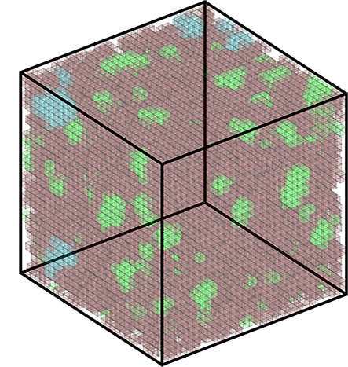

Research

Glassy behavior is observed not only in 'chemical' glasses, but also in granular materials and colloidal suspensions. These systems are characterized by having a glass transition temperature. That is, a temperature in which a mixed order out of equilibrium phase transition occurs and the relaxation times of the system diverge. This critical slowing down in dynamics is one among many reasons as to why studying glassy behavior is challenging both experimentally and theoretically. Kinetically constrained models have been successful in this as they are simple enough to easily simulate large systems and are sometimes analytically solvable.
 Cells have been shown to share similarities with glasses. Amorphous structure and dynamical heterogeneities are among several such examples. The N3 model is known to have some glassy properties such as critical slowing down. Inspired by these biological systems and we propose an active N3 model which shows a rich variety of dynamics, most notably aggregation of active particles due to activity and interesting clustering.
Cells have been shown to share similarities with glasses. Amorphous structure and dynamical heterogeneities are among several such examples. The N3 model is known to have some glassy properties such as critical slowing down. Inspired by these biological systems and we propose an active N3 model which shows a rich variety of dynamics, most notably aggregation of active particles due to activity and interesting clustering.
The motion of a charged tracer particle moving through a system of diffusing particles had been studied widely both theoretically and experimentally. Here we study the motion of an active particle tracer through a thermal geometrically frustrated glassy system. This simple model allows us to better understand the motion of the particle analytically and gain deeper insight on the diffusivity of active particles.